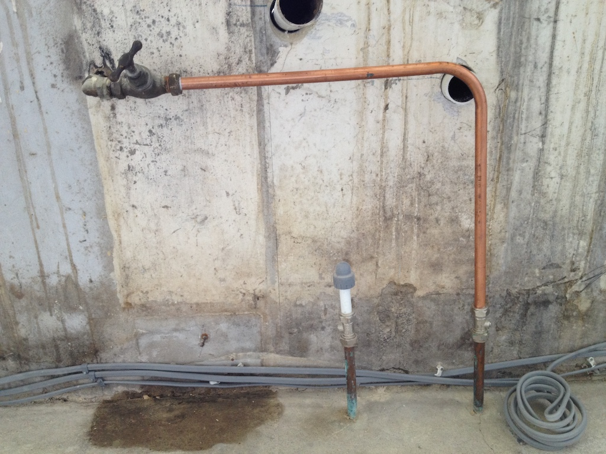
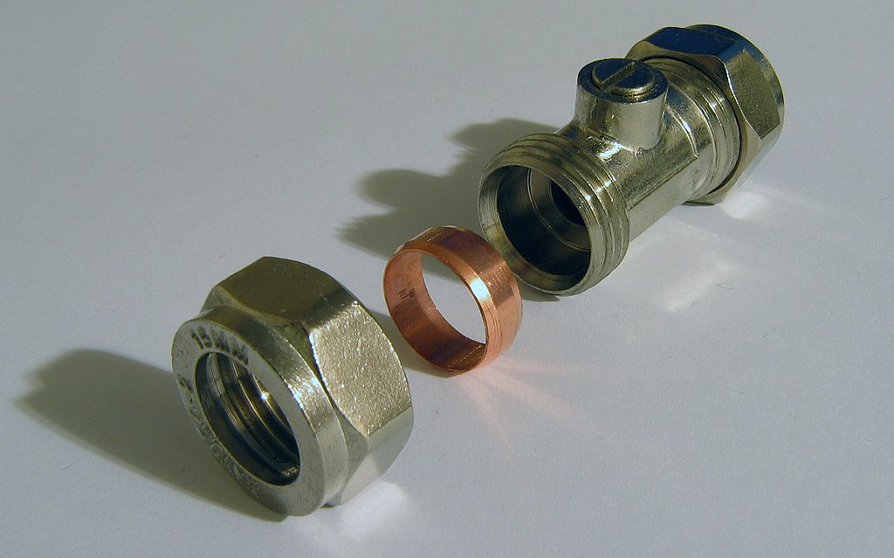

Plumbing
We all need water, so we have taps in our houses. The water gets to the taps by pipe. In our house we have copper pipes, although sometimes plastic pipes are used. You might like to find out how the water gets to our pipes.
We are having a new kitchen and the first thing that was done was to pull out all the old units, the hob, the oven and the sink. All that was left of our pipes was the two short pieces you can see in the photo coming up through the floor. The plumber put a plastic cap on them both, like the one on the left. But the man laying a new floor needs quite a lot of water and can't get his bucket in the little wash basin in our toilet.
The pipe from the tap at the top goes through the wall to an outside tap, but the pipe to it had been cut off. So I added the piece of bent copper pipe so that the floor man can get water. The pipe is connected to the pipe coming out of the floor and the tap using what are called compression joints. The photo shows the connector at the bottom. The pipe goes through the hole in the nut, through the ring and into the body of the joint. The ring is made of brass (a mixture of two metals, copper and zinc) and is called an olive (I don't know why). When you tighten the nut the olive is squashed into the pipe and seals the joint. So now we have a working outside tap.